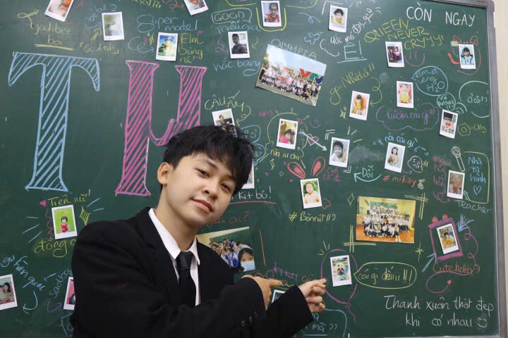

Là 1 sinh viên ngành Kỹ thuật Máy tính tại Đại học Công nghệ (UET) — Đại học Quốc gia Hà Nội, là một trong những người tiên phong trong lĩnh vực bán dẫn tại Việt Nam trong vòng 5 năm tới.
Hành trình nâng cao kỹ năng sử dụng công nghệ số trong học phần Công nghệ số và trí tuệ nhân tạo.
Công nghệ số cung cấp cho bạn mọi câu trả lời, nhưng chính khả năng đặt câu hỏi mới quyết định tầm vóc của bạn.
Sử dụng tối ưu hóa các công cụ và kiến thức số thông qua 6 bài tập từ các chương trong quá trình học.
Tổ chức, sắp xếp các bài tập một cách khoa học thuận tiện cho việc sử dụng trong tương lai.
Khả năng liên kết và tích hợp các bài tập nhỏ thành 1 sản phẩm lớn với mục đích giới thiệu năng lực của bản thân.
Ghi lại quá trình tham gia học tập và tư duy bộ môn trong học kỳ.
Nội dung dự án được cập nhật theo 6 bài tập từ các file Word. Nhấn vào thẻ để xem nội dung đầy đủ trên Google Drive.
Cảm nhận về toàn bộ quá trình học tập bộ môn CNS&AI
Khó khăn: Lượng kiến thức lớn và mới, dễ bị quá tải khi tự học.
Giải pháp: Sử dụng sơ đồ tư duy (mind map), chia nhỏ nội dung và tìm mẹo nhớ nhanh.
Khó khăn: "ảo giác AI" hay Hallucination rất dễ gây ra sự sai lệch, bịa đặt về mặt thông tin.
Giải pháp: Luôn kiểm chứng thông tin từ các nguồn khác, không tin tưởng AI 100% mà phải có tư duy phản biện chủ động.
Tiếp tục nâng cao kĩ năng sử dụng CNS&AI một cách hiệu quả năng suất mà vẫn bảo đảm liêm chính học thuật và đạo đức trên không gian mạng để phục vụ cho công việc tương lai.
Liên tục trau dồi bản thân, nắm bắt những cái mới để theo kịp thời đại và bổ sung những thành tích cũng như kiến thức mà mình học được vào portfolio để xây dựng một CV đẹp trong tương lai.